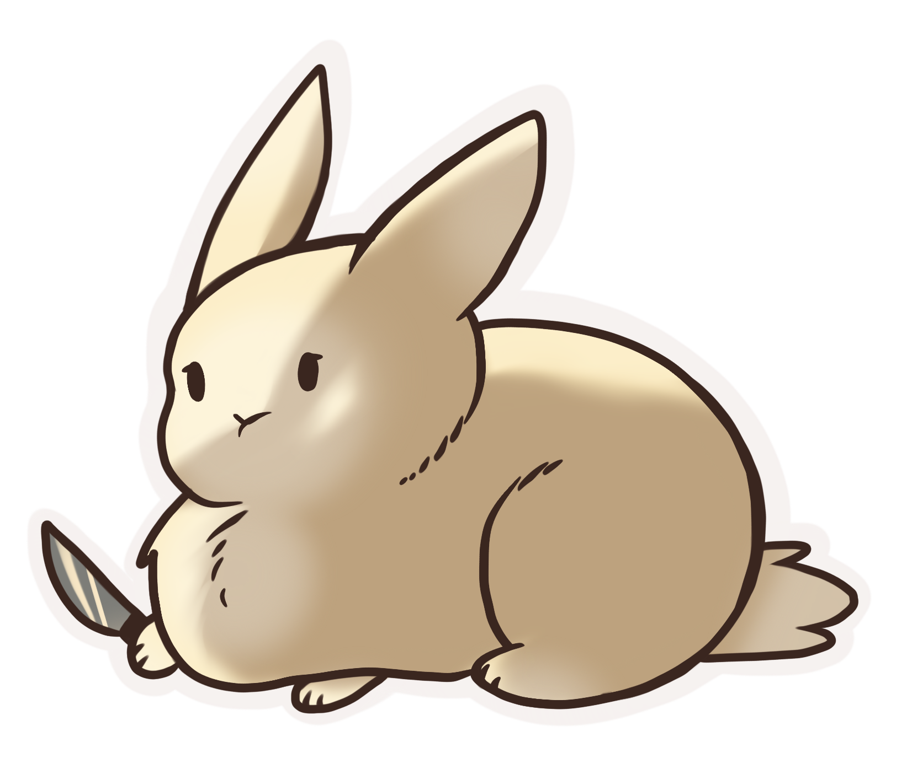

M
i
d
e
t
t
a
Heyo, I'm Midetta! I'm 21 and live in England working full-time. Art is a hobby outside of work, however I wish for it to one day be my full-time job in the future. Most of my work is for commissions as I do those on the side when I have time. Video games and art get me through the days. You may find me on games like Final Fantasy 14, Path of titans and even on Beasts of Bermuda! Don't be afraid to contact me regarding commission queries I don't bite, I promise!
